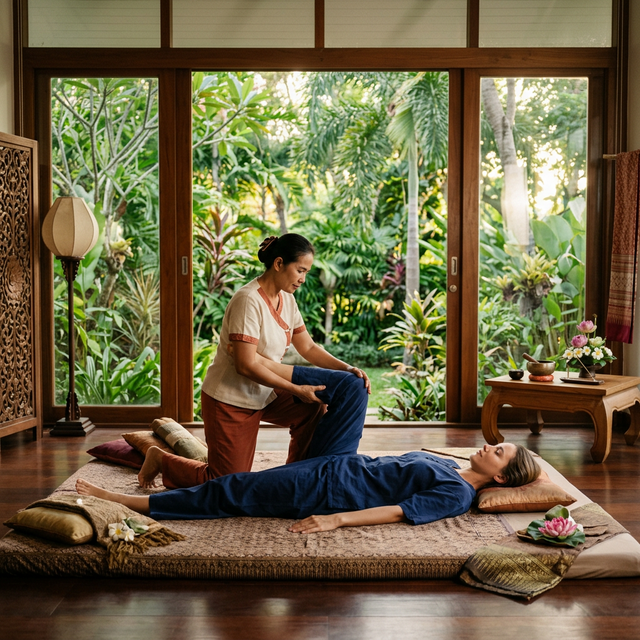

Denjenigen helfen, die mit dem Körper arbeiten, online mit Klarheit und Authentizität gefunden zu werden.
Viele Professionelle im Gesundheitswesen empfinden die digitale Welt als laut, kompliziert und unpersönlich. Meine Mission ist das Gegenteil: Strukturen zu schaffen, die Ordnung in Ihr Denken bringen und als Erweiterung Ihrer Praxis fungieren.
Eine gute Website ist nicht nur Code. Sie ist eine Brücke des Vertrauens zwischen Ihnen und denen, die Ihre Hilfe suchen. Ich arbeite daran, dass diese Brücke sauber, schnell und vor allem authentisch ist.

Mein Prozess ist kollaborativ und iterativ. Ich liefere nicht nur eine Seite aus; wir bauen gemeinsam ein digitales Haus, das Ihre Kunden willkommen heißt.
Ich verwende moderne Technologien, die Kundenunabhängigkeit gewährleisten. Das Ziel ist, dass die Seite einfach zu verwalten ist, damit Sie sich auf das Wesentliche konzentrieren können: die Menschen.
Es hängt von der Komplexität ab, aber normalerweise dauert ein mittleres Projekt zwischen 4 und 6 Wochen vom Konzept bis zum Start.
Nein. Ich übernehme den technischen Teil und stelle Ihnen am Ende eine einfache Anleitung zur Verfügung, damit Sie grundlegende Updates ohne Angst selbst vornehmen können.
Bereitschaft, Ihre Vision zu teilen und Zeit, um über Ihre Praxis zu sprechen. Texte und Bilder können gemeinsam erarbeitet werden.
Ja, absolut. Alle Seiten sind responsiv und für jedes Gerät optimiert.